OUTCRY 加密货币交易所全流程操作手册 OUTCRY Cryptocurrency Exchange End-to-End Operation Manual
从零创建账户、获取库内 HD 派生充值地址、理解区块确认与入账规则、使用 WebAssembly 盘口与技术指标下达限价/市价单，到绑定提币白名单、通过后台风控审批并由库内 BIP-143 原生隔离见证签名器广播到账——全程由 19 支 Computer Use 桌面实景操作动图（GIF）与真实账户 alice@outcry.dev 逐笔数学验算驱动。
Walk step by step from creating an account, deriving in-DB HD deposit addresses, tracking confirmation finality, and executing limit/market spot orders with WebAssembly indicators, all the way to whitelisting cold-storage addresses, passing back-office custody approval, and confirming zero-fee BIP-143 SegWit payouts — demonstrated via 19 live Computer Use action GIFs on trader alice@outcry.dev and reconciled to 0.0001 precision.
第 1 章：账户注册、登录鉴权与安全基线Chapter 1: Account Creation, Authentication & Security Baseline
打开交易终端首页后，首先进入全屏安全门禁（Auth Gate）。你可以选择 GitHub OAuth2 一键登录（直接复用你在 GitHub 上配置的硬件 Passkey / 2FA 双因素认证），或使用邮箱 + 密码极速创建新交易账户。
Opening the terminal presents the full-screen Auth Gate. Authenticate in one click via GitHub OAuth2 (inheriting your GitHub hardware Passkey / TOTP 2FA) or register instantly with Email + Password.
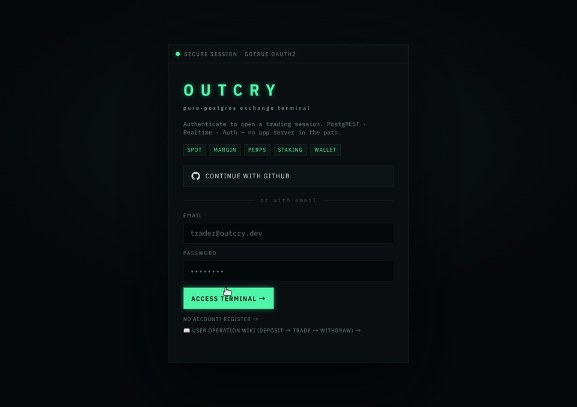
NO ACCOUNT? REGISTER →，输入 alice@outcry.dev 与密码并点击 CREATE ACCOUNT →，库内触发器自动开通实体与资金户，直达 live · realtime 主交易台。
30-second instant onboarding: Click NO ACCOUNT? REGISTER →, enter alice@outcry.dev & password, and click CREATE ACCOUNT → to provision isolated RLS accounts and enter the live terminal.
首次进入终端：推荐返佣绑定与日/夜亮暗主题切换Inside the Terminal: Referral Link & One-Click Day/Night Theme
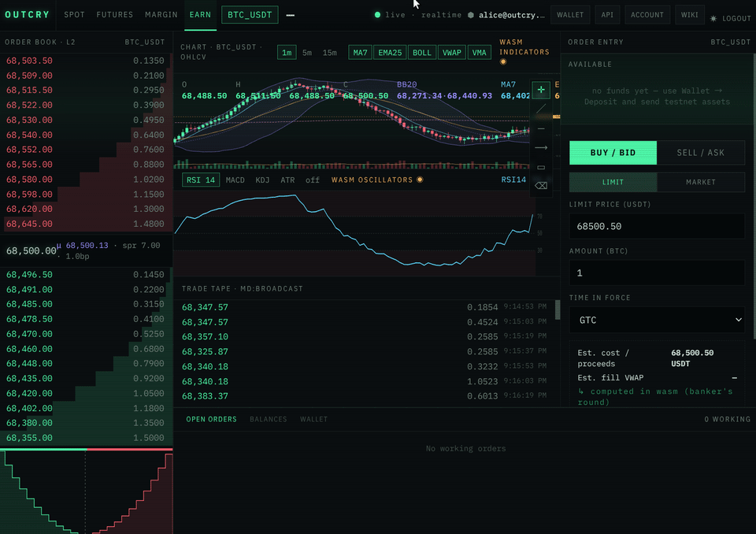
ACCOUNT 即可一键复制专属邀请链接（?ref=代码）或一次性绑定推荐人，账本流水自动按 0.02% 计提佣金。
Click ACCOUNT to copy your referral URL (?ref=CODE) or bind a referrer code once to earn 2 bps (0.02%) rebates on referee volume.
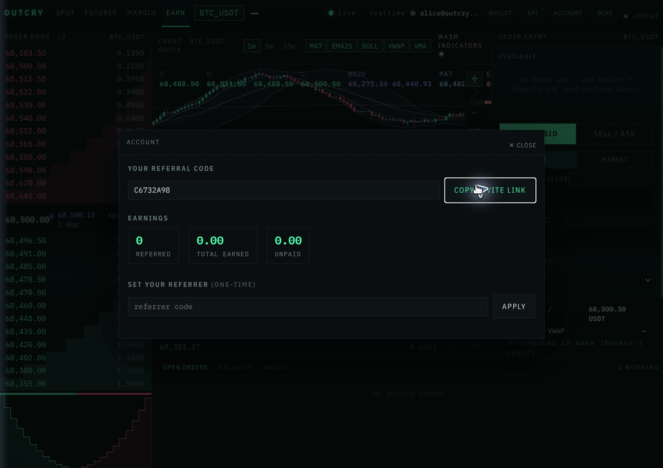
☀ 在「磷光暗黑模式」与「高对比日间亮色模式」之间无缝切换，并联动切换 K 线周期。
Toggle ☀ in the top bar to switch seamlessly between phosphor dark mode and high-contrast daylight mode.
第 2 章：链上充值全流程精讲（Deposit）Chapter 2: On-Chain Deposits (Multi-Chain Derivation & Finality)
OUTCRY 严禁无链上背书的余额铸造——每一笔客户入金都由数据库内置的 pg_cron 链上轮询器监测，并在达到目标链区块确认阈值后自动执行 MASTER → 用户账户 的复式入账。
OUTCRY strictly prohibits unbacked balance minting — every customer credit is watched by in-database pg_cron chain pollers and posted via an idempotent MASTER → User double-entry transfer once block finality is reached.
支持的充值币种、区块链网络与入账确认阈值Supported Deposit Coins, Networks & Confirmation Thresholds
| 前端币种UI Coin | 选择网络Network | 地址格式Address Format | 要求的区块确认数Required Confirmations | 到账账本币种Credited Currency |
|---|---|---|---|---|
| BTC | Bitcoin · testnet4 | tb1q… （原生隔离见证 P2WPKH）(Native SegWit P2WPKH) | 2 个区块2 blocks | BTC |
| USDT | TRC-20 · Nile | T… （波场 Nile 测试网 34 位地址）(34-char Tron Nile Base58Check) | 19 个区块19 blocks | USDT |
| USDC | SPL · devnet / ERC-20 · Sepolia | Solana Base58 / EVM 0x… | 32 / 12 | USDC |
| ETH / TRX / SOL | Sepolia / Nile / devnet | 对应测试网原生地址Native testnet addresses | 12 / 19 / 32 | EUR （演示映射）(demo mapping) |
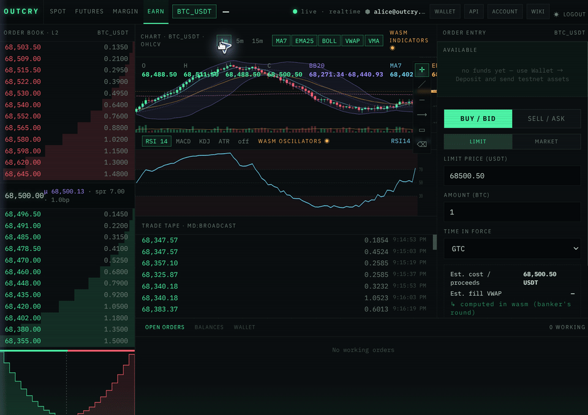
WALLET 选择 BTC → Bitcoin · testnet4，库内实时派生你独享的固定 tb1q2y05… 地址并点击 COPY 一键复制。
Open WALLET, choose BTC → Bitcoin · testnet4 to derive your permanent tb1q2y05… address inside PostgreSQL, and click COPY.
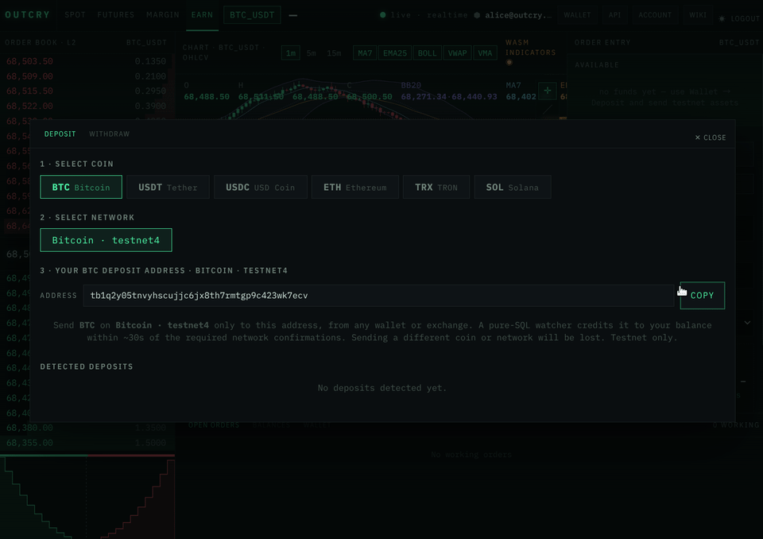
USDT → TRC-20 · Nile，获取专属波场 TQStC9SW… 地址并复制，用于入金现货买单与合约保证金所需的 USDT。
Select USDT → TRC-20 · Nile to obtain and copy your personal TQStC9SW… address for spot buys and perpetual margin.
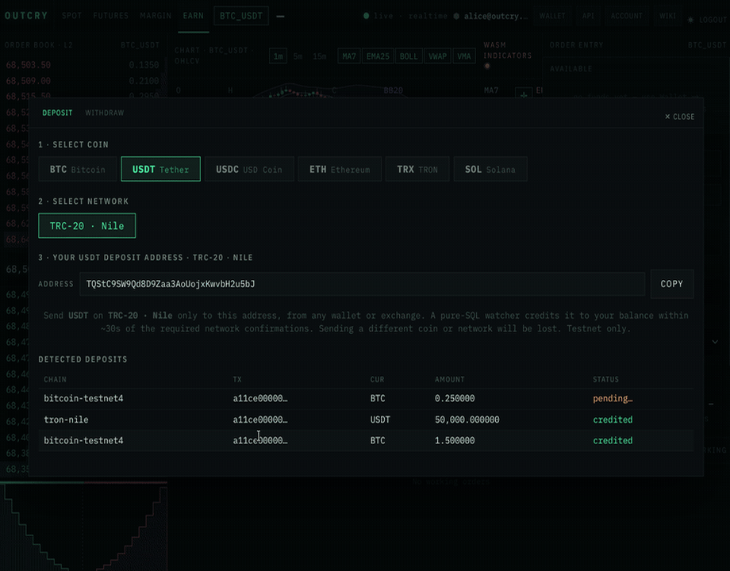
0.25 BTC 保持橙色 pending…（严格不计入余额）；满确认数的 1.5 BTC 与 50,000 USDT 显示绿色 credited，关闭弹窗即可在底部 BALANCES 核验到账！
Reorg protection in action: Unfinalized 0.25 BTC (1/2 conf) stays in amber pending…, while finalized 1.5000 BTC and 50,000.0000 USDT show green credited and appear immediately in BALANCES!
交互式充值防丢币自检表（转账前请逐项勾选）Interactive Pre-Deposit Safety Checklist (Tick Before Sending)
第 3 章：现货交易全流程精讲（看盘、限价冻结、市价吃单与撤单）Chapter 3: Spot Trading Masterclass (WASM Charting, Limit Holds & Market Sweeps)
OUTCRY 终端内置完整的 WebAssembly 盘口与指标计算内核：支持点击左侧 L2 盘口任意价格自动填单、5 种主图均线/布林/VWAP 叠加、4 种摆动副图（RSI/MACD/KDJ/ATR）、6 种持久化画线工具，以及 LIMIT / MARKET 与 GTC / IOC / FOK 组合报单。
Powered by a client-side WebAssembly engine, the terminal offers one-click L2 price-to-ticket autofill, 5 overlay indicators (MA/EMA/BOLL/VWAP), 4 sub-pane oscillators (RSI/MACD/KDJ/ATR), 6 persistent chart drawing tools, and full LIMIT / MARKET × GTC / IOC / FOK execution.
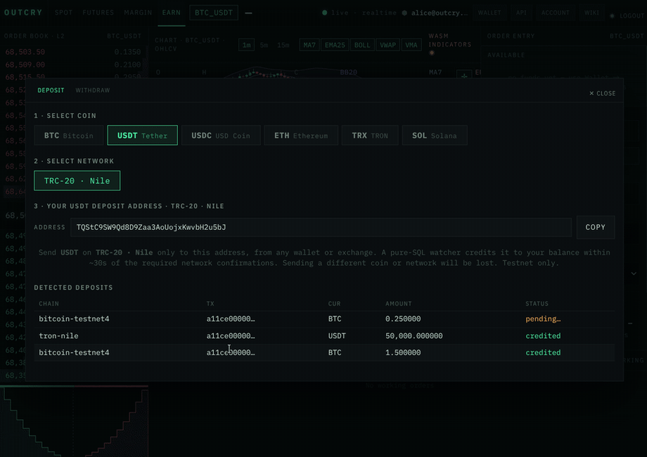
5m 周期与 MACD 副图，点击右侧悬浮画线栏 ─ 在 K 线上标出关键支撑/阻力位（按品种自动保存在本地浏览器，刷新不丢失）。
Switch to 5m candles and MACD, then select ─ on the floating rail to plot support/resistance levels persisted in localStorage.
三大生效时间策略（Time in Force）核心对比Time-in-Force (TIF) Execution Semantics
| 策略TIF | 全称Full Name | 撮合执行逻辑Matching Behavior | 最佳实战场景Ideal Use Case |
|---|---|---|---|
GTC | Good-Til-Cancelled | 未立即成交的部分进入盘口持续排队，直至成交或手动点 ✕ 撤销。Unfilled remainder rests on the order book until filled or cancelled via ✕. | 逢低挂买单接针、逢高分批挂卖止盈。Passive bid accumulation & staged take-profit asks. |
IOC | Immediate-Or-Cancel | 立即按对手盘最优价能成多少成多少，剩余未成部分当场自动撤销解冻，绝不留单。Fills immediately up to your limit price; any unfilled remainder cancels immediately. | 机构首选「带滑点上限保护的市价扫货单」！Institutional favorite: slippage-capped aggressive sweeps! |
FOK | Fill-Or-Kill | 对手盘够填满 100% 数量则原子全成，差一丝一毫则整单全部取消。Fills 100% of requested size immediately or cancels the entire order atomically. | 要求双腿严格等量的套利与大宗对冲。All-or-nothing multi-leg arbitrage & block hedges. |
实操一：挂出 68,450.00 限价买单并核验资金冻结（Reserved）Walkthrough A: Resting Limit Buy @ 68,450.00 & Balance Reservation
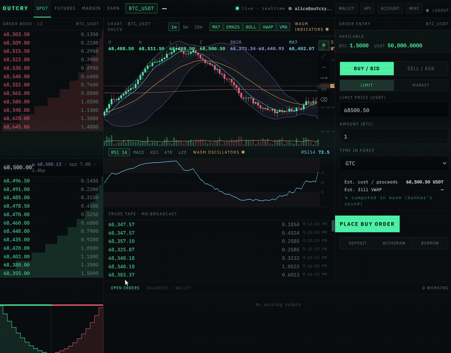
68450.00 × 0.2 BTC 点击 PLACE BUY ORDER：左侧买盘新增 68,450.00 | 0.2000，右上角显示 36,310.0000 +13,690.0000 rsv，底部 BALANCES 与 OPEN ORDERS 精准同步。
Submit 68450.00 × 0.2 BTC: 68,450.00 | 0.2000 joins the L2 bid ladder, AVAILABLE shows 36,310.0000 +13,690.0000 rsv, and BALANCES proves Total (50,000) = Reserved (13,690) + Available (36,310).
实操二：跨两档市价扫货（VWAP 精确验算）与一键撤单解冻Walkthrough B: Multi-Level Taker Sweep (VWAP 68,505.29) & Instant Cancel
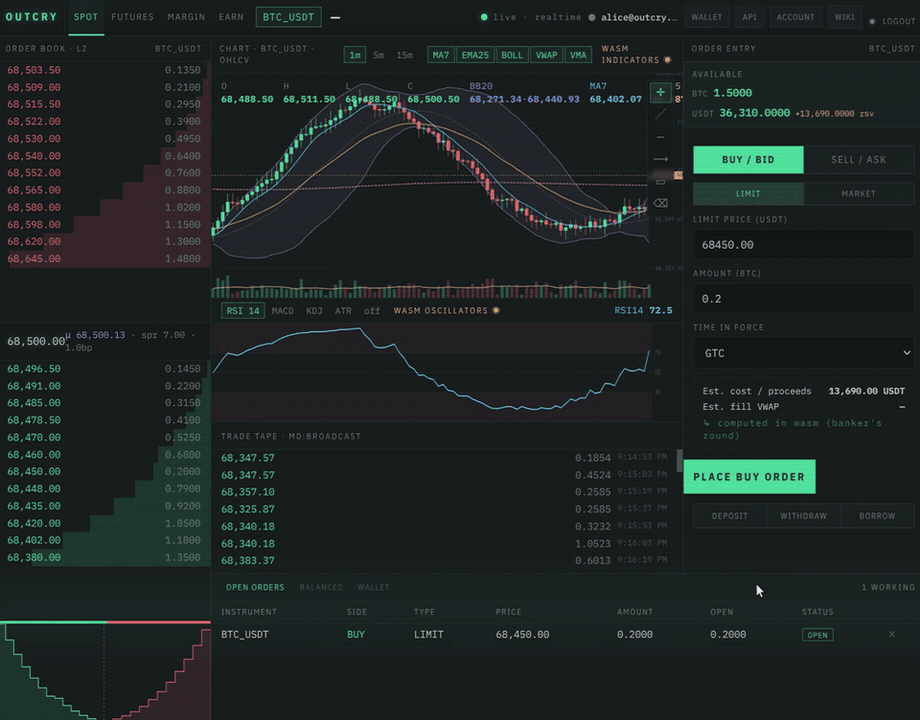
MARKET 预览跨两档均价 68,505.29 并下单：卖一 68,503.50 (0.135) 扫空、卖二 68,509.00 补齐 0.065，BTC 原子跃升至 1.7000！
Switch to MARKET, preview exact two-level VWAP 68,505.29, and execute: clears Ask 1 (0.1350) + sweeps Ask 2 (0.0650), jumping BTC to 1.7000!
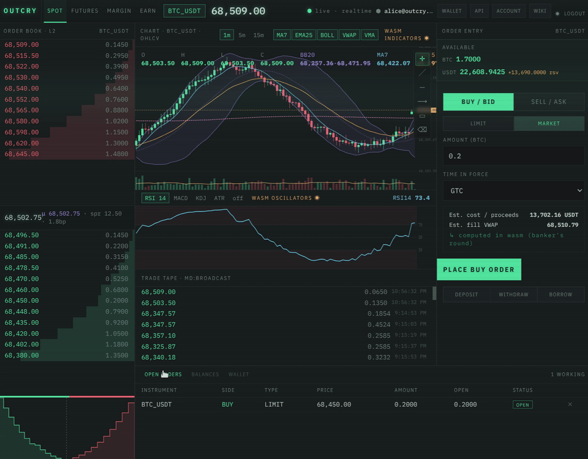
✕ 后，68,450.00 买单从盘口移除，13,690.0000 USDT 立即释放回可用余额（36,298.9425）。
Clicking ✕ removes the 68,450.00 bid and releases 13,690.0000 USDT immediately back to free Available (36,298.9425).
±10% 价格保护带时，若直接提交无价格（price=0）的市价单被价格带拦截，只需选择 LIMIT + 略优于对手盘的保护限价（如买单填 68,550）+ IOC，即可享受与市价单完全一致的毫秒级跨档扫货体验，同时自带最大滑点保护盾！
When an instrument enforces a ±10% fat-finger price band, use LIMIT + a protective cap price (e.g. 68,550) + IOC instead of an uncapped MARKET order — it sweeps multiple ask levels in milliseconds while guaranteeing your worst-case fill price!
第 4 章：链上提币全流程精讲（白名单、冻结、审批与零扣费全额到账）Chapter 4: On-Chain Withdrawals (Whitelist, Rolling Caps & Zero-Fee Payout)
在 OUTCRY 中，提币受到强制白名单机制、24 小时滚动限额（默认 5 BTC / 50,000 USDT）、幂等键防重扣与管理员审批（做市商账户支持原子自提自动放行）四重保护；且链上矿工费由平台金库承担，收款地址 100% 全额收到申请金额！
Withdrawals are guarded by mandatory address whitelisting, 24-hour rolling caps (5 BTC / 50,000 USDT), idempotency keys, and operator approval (with atomic auto-approval for assigned Market Makers) — and because miner fees are paid by treasury change, your external wallet receives 100% of the requested amount!
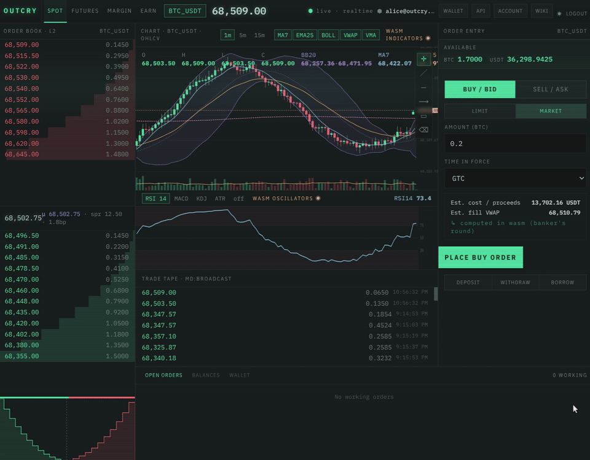
Withdraw → BTC 填入测试网地址 tb1pznce… 与备注 Cold Ledger Vault 点击 WHITELIST，状态显示为绿色 usable 并自动选入下拉框。
In Withdraw → BTC, paste tb1pznce… with label Cold Ledger Vault and click WHITELIST — status turns green usable and auto-selects.
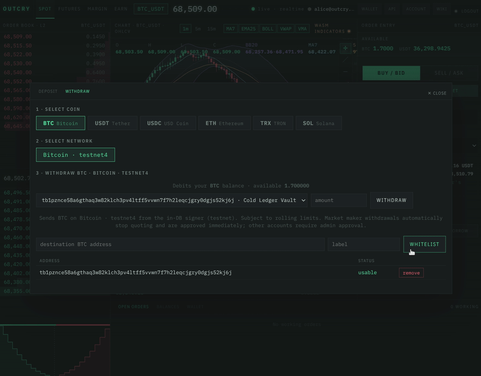
0.25 点击 WITHDRAW，系统立即锁定 +0.2500 rsv 防双花，并在底部 WALLET 页签生成 PENDING 待审记录。
Enter 0.25 and click WITHDRAW: immediately locks +0.2500 rsv and tracks the PENDING request in the bottom WALLET blotter.
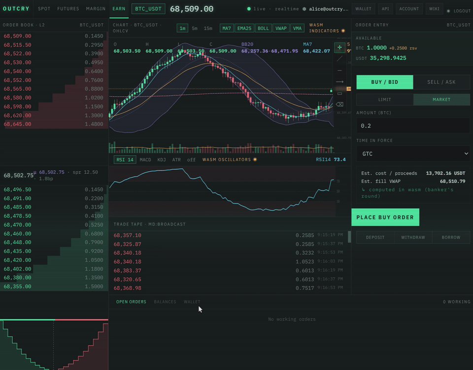
APPROVED，+0.2500 rsv 冻结清零，冷钱包全额收到 0.25000000 BTC！
Once approved and signed/confirmed on-chain (Chapter 7), Supabase Realtime flips the row to APPROVED, clears the +0.2500 rsv hold, and delivers 100% of 0.25000000 BTC!
交互式提币终审安全清单（点击 Withdraw 前必勾）Interactive Pre-Withdrawal Safety Checklist
第 5 章：进阶金融产品（永续合约 · 现货杠杆 · 质押赚币）Chapter 5: Advanced Products (Perpetuals · Cross-Margin · Earn Staking)
无需繁琐的账户划转，你的现货可用资金可直接在顶部导航栏打开 FUTURES、MARGIN、EARN 参与衍生品交易与链下生息，所有资金流转均复用 process_transfer 保持全库复式记账平衡。
With zero internal sub-account transfer friction, open FUTURES, MARGIN, or EARN right from the top header bar — every margin lock, loan, interest accrual, and staking reward settles on the same double-entry ledger.
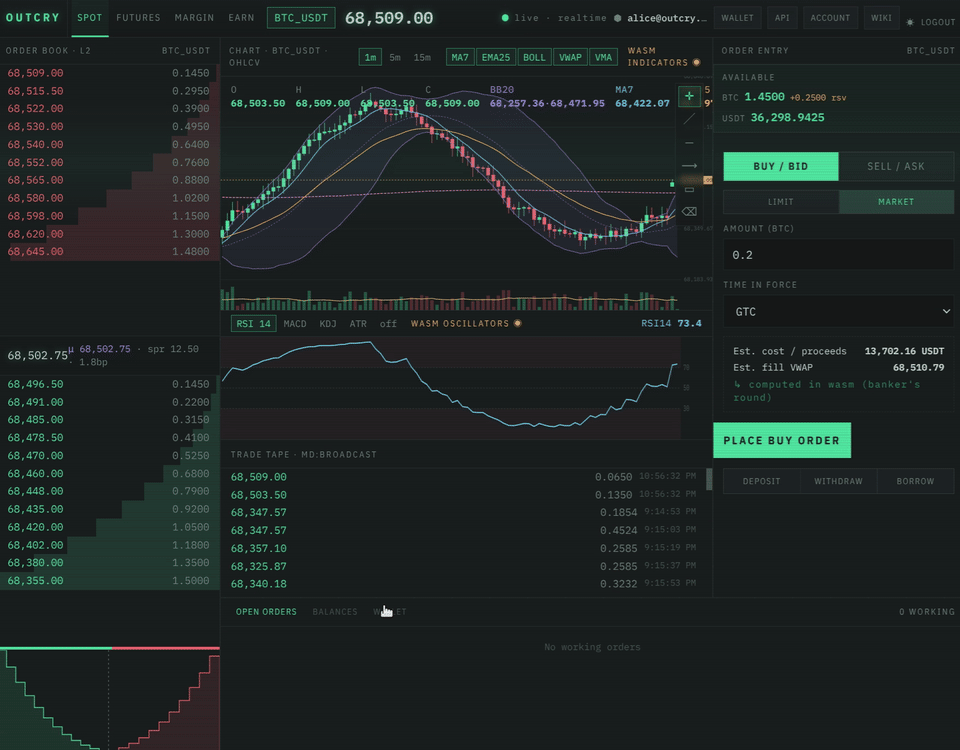
1,000 USDT 保证金开立 0.1000 BTC 多单（Entry 68,503.50），实时展示标记价、资金费率、未实现盈亏 uPnL 与一键 close 平仓按钮。
Post 1,000 USDT margin to open a 0.1000 BTC Long @ 68,503.50 with live mark price, funding rate, uPnL, and one-click close settlement.
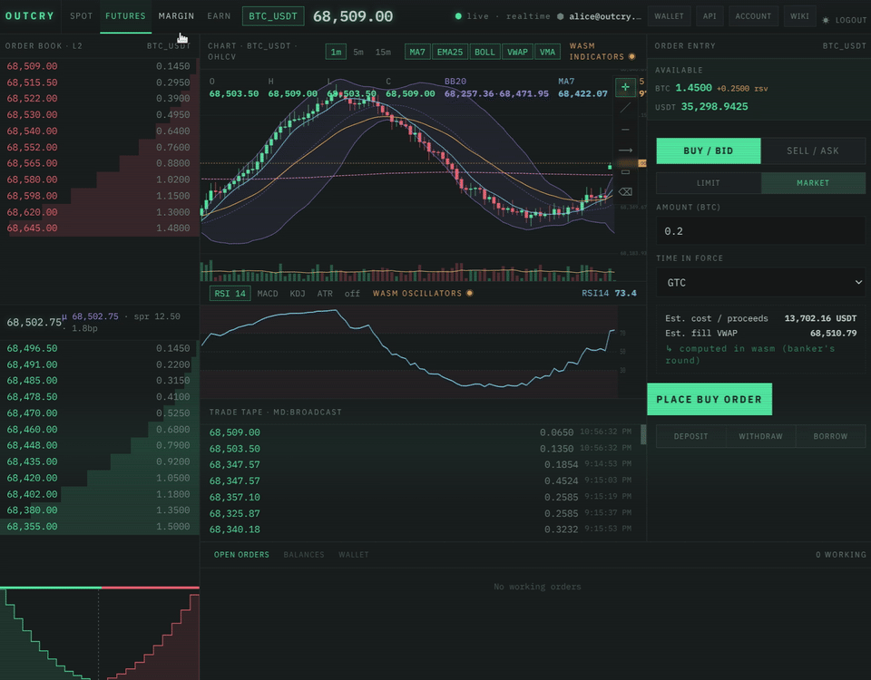
Collateral 155,180.07），借入 0.0500 BTC 后实时追踪应计利息，支持随时一键 repay all（先息后本）。
Portfolio-wide collateral valuation (155,180.07) backing a 0.0500 BTC borrow with per-second interest accrual and interest-first repay all.
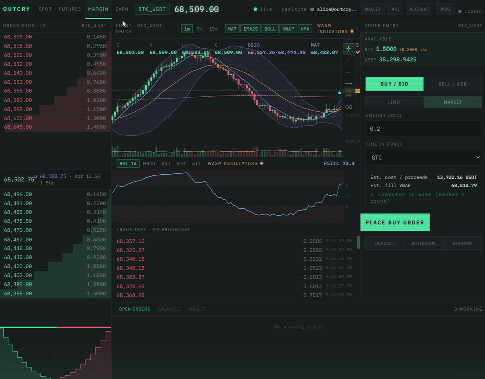
BTC (5% APR)、USDT (10% APR)、EUR (10% APR) 三大矿池；收益按秒累积可随时 claim 秒到账，赎回本金经 7 天解锁期自动返还。
Stake into BTC (5% APR), USDT (10% APR), or EUR (10% APR); harvest accrued rewards instantly via claim, with 7-day pgmq unbonding on principal.
第 6 章：API 密钥管理与量化机器人接入Chapter 6: Developer API Keys & Algorithmic Trading Bots
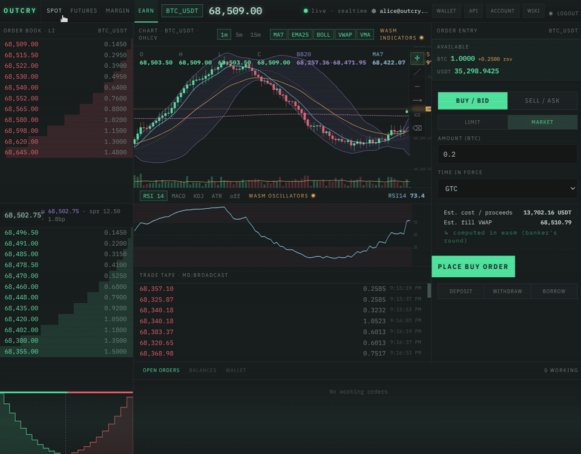
DEVELOPER API 弹窗输入标签名点击 CREATE，妥善保存琥珀色框内的 key_id 与一次性 secret；泄露时可随时点击 revoke 吊销。
Create a labeled bot key in DEVELOPER API, store the one-time secret from the amber banner immediately, and click revoke anytime to invalidate compromised keys.
三步跑通量化交易闭环（换取 JWT → 下单撤单 → 幂等提币）3-Step Quant Loop (Mint Bot JWT → Slippage-Capped IOC → Idempotent Withdrawal)
# 1) Exchange key_id + secret for an in-DB authenticated Bearer JWT
BOT_JWT="$(curl -sS -X POST "$API/rest/v1/rpc/api_key_login" \
-H "apikey: $ANON" -H "Content-Type: application/json" \
-d '{"key_id_param":"ock_...","secret_param":"ocs_...","ttl_seconds_param":3600}' | jq -r .access_token)"
# 2) Submit a slippage-capped aggressive sweep (LIMIT + IOC)
curl -sS -X POST "$API/rest/v1/rpc/place_order" \
-H "apikey: $ANON" -H "Authorization: Bearer $BOT_JWT" -H "Content-Type: application/json" \
-d '{"instrument_name_param":"BTC_USDT","side_param":"BUY","order_type_param":"LIMIT","price_param":68550,"amount_param":0.05,"time_in_force_param":"IOC"}'
# 3) Submit an idempotent on-chain withdrawal (safe across network retries)
curl -sS -X POST "$API/rest/v1/rpc/request_withdrawal_to" \
-H "apikey: $ANON" -H "Authorization: Bearer $BOT_JWT" -H "Content-Type: application/json" \
-d '{"currency_param":"BTC","amount_param":0.1,"to_address_param":"tb1p...","idempotency_key_param":"bot-wd-001"}'第 7 章：管理后台、提币签名流转与七重账本自证Chapter 7: Back-Office, Signer Pipeline & 7-Invariant Proof of Solvency
打开 admin.html 即可看到 OUTCRY 独树一帜的透明风控后台：从 5 项核心复式记账不变量 + 2 项链上充值背书校验，到提币审批与库内 BIP-143 原生隔离见证自动签名确认，每一步都留有不可篡改的只追加审计证据。
Open admin.html to inspect OUTCRY's transparent operator control plane: 5 Core Ledger + 2 Custody invariants verified live, pending withdrawal approvals, autonomous in-DB BIP-143 SegWit signing, and an append-only immutable audit trail.
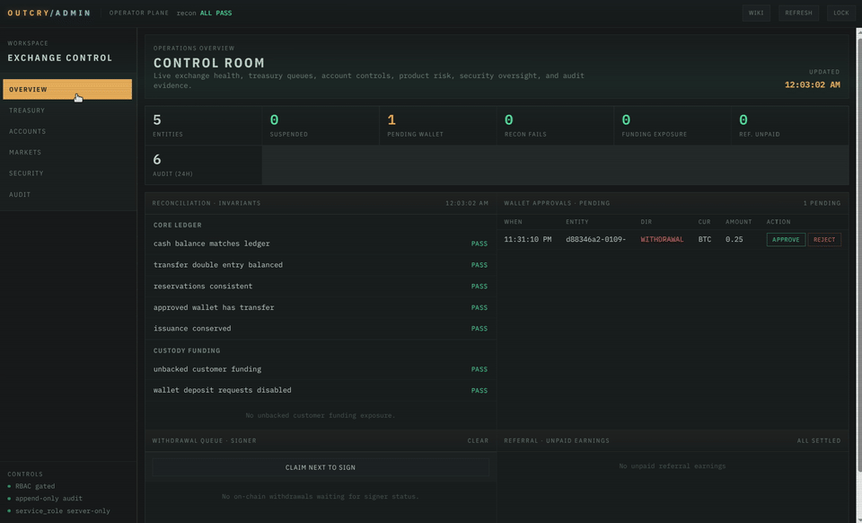
recon ALL PASS（0 RECON FAILS、0 FUNDING EXPOSURE），再切到 TREASURY 点击绿色 APPROVE 放行，申请立即进入 WITHDRAWAL QUEUE · CUSTODY SIGNER（QUEUED）！
Verify recon ALL PASS in Control Room, switch to TREASURY, and click green APPROVE to debit User → MASTER and enqueue 88ff9cff-f for in-DB SegWit signing!
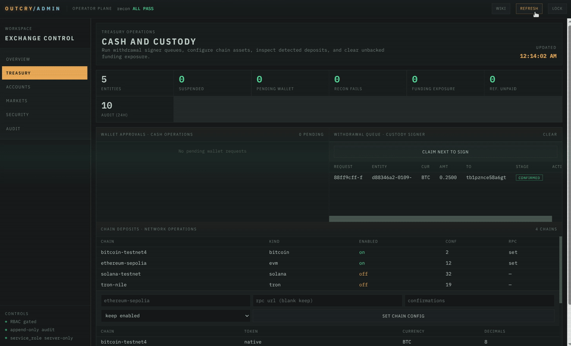
txid: 139142c2…，330 sats 矿工费由金库承担）并完成链上确认（绿色 CONFIRMED），随后切至 AUDIT 核验只追加不可篡改的全链路审计记录！
PostgreSQL builds & broadcasts the 234-byte BIP-143 SegWit tx (txid: 139142c2…), advances the queue to green CONFIRMED, and records tamper-evident evidence in AUDIT!
第 8 章：全量错误码速查词典与高频排障Chapter 8: Complete Error Code Dictionary & Troubleshooting
遇到右下角红色报错气泡时，直接在顶部搜索框输入报错关键词即可定位根因与解决方案：
Type any toast or API error message into the top search bar (press /) to filter root causes and 60-second fixes:
| 弹窗 / API 错误信息Toast / API Error Message | 触发原因解析Root Cause | 1 分钟解决步骤60-Second Fix |
|---|---|---|
insufficient available balance / insufficient funds |
可用余额不足（常因老挂单或待审提币占用了 Reserved 冻结额度）。Free Available balance is insufficient (often locked by resting orders or pending withdrawals in Reserved). |
前往底部 OPEN ORDERS 点击 ✕ 撤销未成交挂单释放资金，或补充链上充值。Cancel unneeded open orders via ✕ in OPEN ORDERS to release holds, or deposit more funds. |
risk price band: P beyond 10 pct band of reference R |
限价偏离参考价超过 ±10% 防胖手指阈值（或开启价格带时发送了 price=0 市价单）。Limit price deviates more than ±10% from reference price (or uncapped price=0 market order hit an active band). |
修正限价至参考价 ±10% 内；市价扫货请选 LIMIT + 保护限价 + IOC。Keep limit price within ±10% of spot; for instant sweeps use LIMIT + protective cap + IOC. |
risk max order notional: X > 100000 |
单笔名义金额（价格 × 数量）超过默认的 100,000 USDT 上限。Single-order notional (price × amount) exceeds 100,000 USDT. |
调小单笔数量（例如 68,500 USDT 下每笔 ≤ 1.45 BTC），分批下单。Reduce clip size (e.g. ≤ 1.45 BTC at 68,500 USDT) and execute in tranches. |
risk max order amount: X > 100 |
单笔数量超过品种上限（或高价品种 BUY MARKET 报价预算超过默认上限）。Order quantity exceeds max_order_amount (or BUY MARKET quote budget exceeds 100 on high-priced pairs). |
拆单提交，或使用 LIMIT + IOC 按基础币数量报单。Split into smaller clips or submit base quantity via LIMIT + IOC. |
address not whitelisted or cooling |
提币收款地址尚未添加进白名单，或处于新地址冷却期。Destination address is not whitelisted on your account or is still in cooldown. | 在 Wallet → Withdraw 下方先点击 WHITELIST 添加地址，待状态变为绿色 usable 后提交。Click WHITELIST in Wallet → Withdraw, verify status is green usable, and select it. |
withdrawal limit exceeded |
过去 24 小时滚动窗口内累计提币（含待审 PENDING）超出单日限额。Trailing 24-hour withdrawals (PENDING + APPROVED) exceed rolling cap (5 BTC / 50,000 USDT). |
调小提币金额至剩余额度内，或等待 24 小时滚动窗口释放额度。Lower withdrawal amount to remaining 24h quota or wait for older requests to roll off. |
btc address not testnet / bad checksum |
BTC 提币误填了 bc1/1/3 主网地址或地址拼写损坏。Mainnet Bitcoin address (bc1/1/3) or corrupted Bech32/Base58 checksum supplied. |
改用合法的 Bitcoin Testnet4 地址（tb1q… / tb1p… / m/n/2…）并重新复制粘贴。Copy-paste a valid Bitcoin Testnet4 address (tb1q…, tb1p…, m/n…, or 2…). |
position exists close first |
永续合约单市场已有持仓，不支持同市场直接叠加新仓。An open perpetual position already exists in this market (net-position model). | 先在 Futures 面板点击当前持仓右侧的 close 平仓，再重新开仓。Click close on your current position in Futures first, then open the new size. |
insufficient margin / exceeds max leverage |
合约初始保证金低于 10× 要求，或全仓杠杆总负债超过 2 × Equity。Perp margin is below the 10× minimum, or cross-margin debt exceeds 2 × Equity. |
增加投入的保证金或降低开仓/借款数量。Post additional margin/collateral or reduce position/borrow size. |
account suspended |
账户已被后台风控临时冻结，暂停交易与提币权限。Account has been frozen by an operator; orders and withdrawals are paused. | 联系管理员在后台 Accounts 模块核实解除（Unsuspend）。Ask an administrator to click Unsuspend in admin.html → Accounts. |